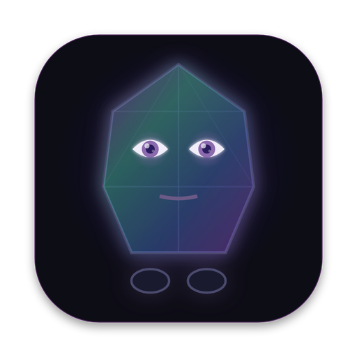

Lodestone
Opening…
Welcome to Lodestone
The Harmonist companion. Your conversations, your memory and the library are kept on this computer.
Or think entirely on this computer
Choose a different model
With a model on this computer, Lodestone works with no internet connection and nothing you say leaves it. Lodestone menu → Model… changes this at any time.
Lodestone could not start
Details
Model
Your harmonism.io account — ten free messages a day
Nothing to download and no key of your own; DeepSeek V4.1 Flash unless you choose another. Lodestone thinks with the models it runs on at harmonism.io and on Telegram, each tested against the doctrine. The corpus, the retrieval, the crisis gate, witness mode, your memory and your practices stay on this computer. What leaves is each turn's question with its context, to harmonism.io and on to the model provider, which keep none of it. Ten messages a day for your first month, then five, in total across harmonism.io, Telegram and this app.
OpenRouter or another provider — your own key, no daily limit
Nothing to download and no daily limit: with OpenRouter, DeepSeek V4.1 Flash and the other models hosted Lodestone runs on, or a frontier model's depth. The corpus, the retrieval, the crisis gate, witness mode, your memory and your practices stay on this computer and work as before. What leaves is each turn's question with its context, to the provider you choose, which can read it; you pay that provider for what you use. The key is kept encrypted by this computer's keychain and is sent only to that provider.
More info
Recommended: the models Lodestone runs on at harmonism.io and on Telegram, each tested against the doctrine. Any other model the provider lists can be typed or picked in the box; it has not been assessed.
On this computer — nothing leaves it
Any other model, from Hugging Face
Paste the link to a .gguf file on Hugging Face (a model split into parts: the link to its first part). Lodestone downloads it, checks every part against the checksum Hugging Face publishes, and runs it with the same doctrine and corpus. It has not been assessed: its answers are its own.
Advanced: use a model server you run yourself
LM Studio, llama.cpp, Ollama or vLLM, on this computer or another you own. Give the address of its OpenAI-compatible endpoint and set its context window to at least 24,000 tokens. Leave it empty to go back to Lodestone's own model.
Updates and library
The app, the corpus, the doctrinal backbone and the library of harmonism.io, kept on this computer. Nothing is fetched unless you open this page.
harmonism.io asks for its password
While harmonism.io is in its private beta, updates need the beta password. It is asked once and kept encrypted on this computer.
Lodestone
Corpus and doctrinal backbone
The library in other languages
The app carries the library in English. Each other language is downloaded once, on request, and then reads offline.